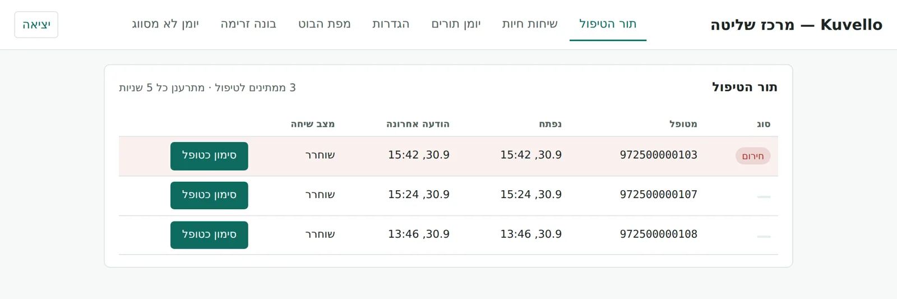
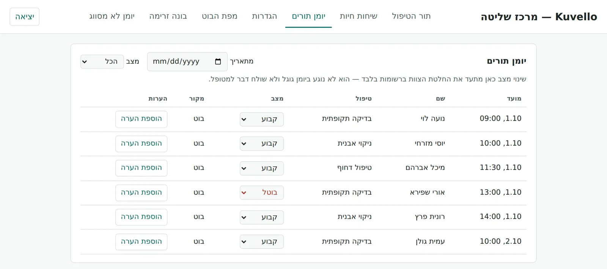

עוזר וואטסאפ למרפאות שיניים
כל הודעה בוואטסאפ מקבלת מענה. גם כשהקבלה עמוסה.
Kuvello עונה למטופלים על מספר הוואטסאפ של המרפאה, קובע תורים ישירות ביומן ושולח תזכורות. לצוות מגיע רק מה שבאמת צריך אדם.
- אף הודעה לא נשארת בלי מענה, גם בערב ובסוף השבוע
- יומן מלא יותר: המטופל קובע תור בכמה לחיצות
- תזכורת לפני התור עם אישור הגעה בלחיצה, כדי לצמצם אי-הגעות
- פחות עומס על הקבלה: שעות, מחירים ומיקום נענים אוטומטית
המוצר
המטופל בוואטסאפ. הצוות במסך אחד.
כפתורים של וואטסאפ עצמו, בלי אפליקציה ובלי קישורים חיצוניים. בצד המרפאה: תורים, פניות דחופות ושיחות חיות במקום אחד.
תזכורת יום לפני התור ושוב שעתיים לפניו, עם שלושה כפתורי תשובה


מסך הצוות האמיתי של Kuvello. השמות והמספרים בצילומים הם נתוני הדגמה.
איך זה עובד
שלושה שלבים עד שהבוט עונה
מחברים את הוואטסאפ של המרפאה
הבוט עונה על המספר שהמטופלים כבר מכירים, דרך WhatsApp Business Platform הרשמית.
מגדירים שעות, טיפולים ויומן
הבוט נבנה על הנתונים של המרפאה: שעות פעילות, סוגי טיפולים, מחירים ויומן התורים.
הבוט עונה, הצוות מנהל
כל שיחה גלויה לצוות. בכל רגע אפשר להשתלט על שיחה ולהמשיך אותה בעצמכם.
פרוטוקול חירום
במקרה חירום, הבוט לא מאלתר
כשמטופל כותב על כאב, נפיחות או דימום, מודל השפה לא מחליט מה לענות. ההתנהגות כתובה בקוד, והמשפטים שהמטופל מקבל קבועים ומאושרים מראש.
זיהוי לפי כללים קבועים
מילים כמו כאב, נפיחות, דימום או שן שבורה מעבירות את השיחה למסלול חירום. הכללים רצים לפני מודל השפה וגוברים עליו.
תור קרוב, או הטלפון של המרפאה
הבוט מציע את המועדים הקרובים ביותר. כל תשובה שאינה בחירה ברורה, כמו "אולי" או "לא יודעת", עוצרת את השיחה ומפנה לטלפון המרפאה באותה הודעה. בלי לשאול שוב ובלי לסיים בשאלה.
קיבלנו את ההודעה שלך. אנחנו כאן בשבילך.
ניתן ליצור קשר עם המרפאה בטלפון: [טלפון המרפאה].
מחוץ לשעות הפעילות
כבר בתשובה הראשונה, לצד המועדים, מופיעה ההפניה:
במקרה חירום רפואי דחוף, פנו למוקד 101 של מד"א או לחדר מיון קרוב.
בלי תשובות רפואיות
הבוט לא עונה על שאלות רפואיות ולא מעריך חומרה. הוא מפנה לצוות. כשמטופל מתאר מצב מסכן חיים שאינו דנטלי, כמו כאב בחזה או קושי לנשום, מתווספת גם ההפניה ל-101.
הצוות רואה מיד
פנייה דחופה עולה לראש "תור הטיפול" במסך הצוות, מסומנת כחירום, ונשארת שם עד שמישהו מהצוות מסמן שטיפל בה.
אין "התור נקבע" בלי רישום מאומת
הבוט מאשר תור רק אחרי שהיומן אישר את הרישום. אם הרישום לא אומת, המטופל מקבל את הטלפון של המרפאה, לא אישור.
מידע של מטופלים
מה נשמר, איפה, ולכמה זמן
- איפה
- בשרת ייעודי של Kuvello, במרכז נתונים באמסטרדם (DigitalOcean, האיחוד האירופי). ההודעות עצמן עוברות דרך WhatsApp של Meta.
- מה נשמר
- שם, מספר הוואטסאפ, פרטי התור ותוכן השיחה עם הבוט. הבוט לא מבקש תעודת זהות: חסימה בקוד מונעת שליחה של בקשה כזו.
- לכמה זמן
- תמלילי השיחות נמחקים אוטומטית אחרי 30 יום. גיבויי השרת נמחקים אחרי שלושה ימים לכל היותר. רשומות התורים נשמרות עד שמבקשים למחוק אותן.
- מחיקה
- מטופל ששולח "הסר" מפסיק לקבל הודעות מיד. בקשה למחוק את כל המידע מטופלת תוך 30 יום. הוראות למחיקת מידע
שאלות נפוצות
שאלות שמרפאות שואלות
המטופלים צריכים להתקין משהו?
לא. הם כותבים למספר של המרפאה בוואטסאפ, כמו תמיד.
באיזו שפה הבוט עונה?
בעברית. הודעה בשפה אחרת מקבלת תשובה שהשירות ניתן בעברית בלבד.
מה קורה כשהבוט לא מבין?
הוא מבקש פעם אחת לנסח מחדש. אם עדיין לא ברור, הוא נותן את הטלפון של המרפאה. הצוות רואה את השיחה ויכול להמשיך אותה בעצמו.
זה עומד בכללים של WhatsApp?
כן. Kuvello עובד על WhatsApp Business Platform הרשמית של Meta, ומטופל שכותב "הסר" מפסיק לקבל הודעות.
עם מי אני עובד?
ישירות עם מי שבנה את המערכת. בלי מוקד ובלי מתווכים.
רוצים לראות איך זה עובד אצלכם?
שלחו הודעה לבוט הדמו, או קבעו שיחה של 15 דקות.